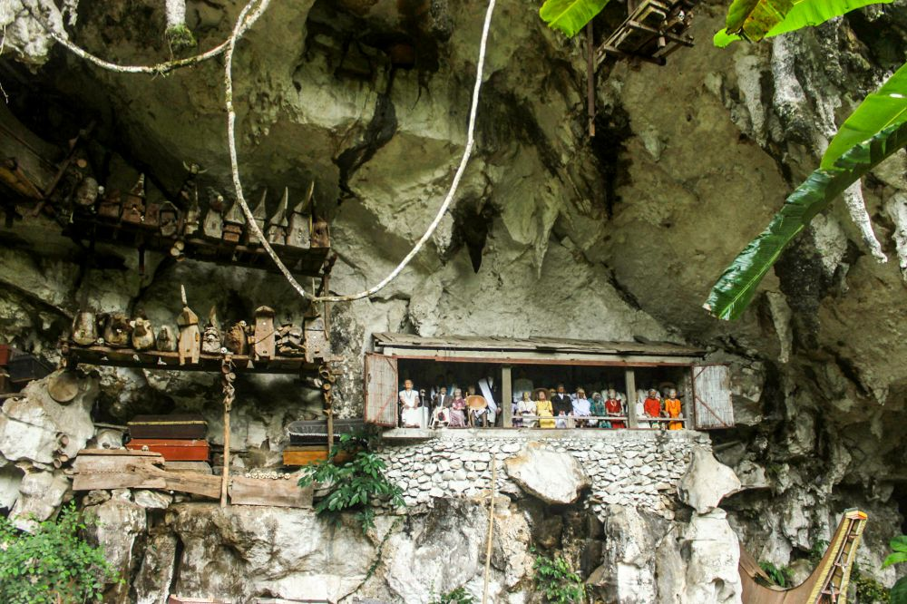

HISTORY
Toraja comes from the Bugis language, namely "To Riaja". This word means people who live in the land above.
The origin of the Toraja people is from the Gulf of Tonkin which lies between southern China and Vietnam. At first, the ancestors of the Toraja tribe inhabited coastal areas in Sulawesi before finally moving to the highlands.
When Indonesia was controlled by the Dutch, namely in 1909, the Dutch Colonial called this tribe the Toraja Tribe. This tribe is famous for its funeral rituals, besides that this tribe is also famous for its wood carvings and its traditional house, namely the tongkonan.
CULTURES
Rumah Tongkonan
The Toraja traditional house is called Tongkonan. This house is only occupied by aristocrats from the Toraja Tribe and is the center of life for the Toraja people.
There is a folk tale that is believed by the Toraja people regarding the establishment of the first Tongkonan house. The Toraja people believe that the Tongkonan was first built in heaven with a total of 4 poles. Then the ancestors of the Toraja people came down to Earth and imitated the house and held a big ceremony.
Because it is a large and magnificent house, the construction of the Tongkonan house is a big, tiring job. Therefore, a Tongkonan house was built by a large family together.
Rambu Solo
The funeral ceremony in Toraja society is called Rambu Solo '. This ritual was only performed by aristocrats because it was very expensive. The funeral ceremony of the nobility was usually attended by hundreds of people. The event can last for days.
Funeral ceremonies do not have to be carried out immediately after a family member has passed away, but can be done after weeks, even years after the death of the person concerned. This is intended so that the cost of the traditional funeral ceremony is collected, considering that this ceremony is very expensive.
Tedong Silaga
Tedong Silaga or Ma 'Pasilaga Tedong is one of the well-known traditions of the Toraja people. This tradition is a buffalo fighting activity that has been carried out since the time of the Toraja tribe and has been preserved until now.
The buffalo fighting event is held in conjunction with the Rambu Solo ceremony. This tradition is so interesting that many tourists visit Toraja to witness it. The buffaloes to be pitted will be given a unique name.
Ma' Badong
Almost every Toraja traditional ceremony is related to dance, for example at funerals. This dance is a symbol of grief, respect and to give encouragement to spirits for going on a long journey to the afterlife.
The first thing that is done is for a group of men to form a circle and sing songs throughout the night as a tribute. This ritual is called Ma'badong. This process is considered very important in funeral ceremonies.
Upacara Ma' Nene
The ma 'nene ceremony is one of the indigenous Toraja cultural traditions that can be said to be unique. This ceremony is a form of respect for their ancestors who have died. This honor is carried out in the form of cleaning corpses and changing clothes for the bodies of ancestors who have died. This ritual is held every 3-4 years.
This ceremony is carried out by visiting the graves of the ancestors, then removing their bodies which previously started with a kind of traditional ceremony and reading prayers together. The bodies were then cleaned using a brush, then their clothes were changed using new clothes. Cleaning and changing the clothes of the body does not take long, which is about 30 minutes. Then the bodies were put back into the cemetery. The ceremony ends with praying back and eating together while gathering between families who are still the same ancestor.
DESTINATIONS

Londa
Londa tourism object is a mountain cliff used by local residents to bury their family or relatives who have died. The bodies of those who have died are put in the coffin in general.
However, in the custom that applies in Toraja, the chest will be made a hole in a mountain cliff and stored there. Especially for noble families, tau-tau or a kind of replica or miniature doll will be made to reflect the corpse.
Lokomata
No different from other cemeteries in Toraja. Lokomata is also known as a place to store bodies. The unique thing is Lokomata is on the side of the main road.
Lokomata itself means hole. This means that this place consists of a very large stone and is perforated as a function of placing the body.
If this stone already has many holes, it means that it has been used by many people. Usually in one hole it is used for the funeral of a family.
Ollon
Ollon is a favorite natural tourist attraction for children because the hill is so wide that it makes them free and free to play. The location itself is in Bau Village, Bonggakadeng District.
If you depart from Makale City, the distance is approximately 45 km and can be reached in 1 hour. Apart from children, there are also many communities and families who spend their holidays here.
Not a few also camp to feel the beautiful charm of nature and the cool air at night. Many also take pictures because they have a good background to make objects

Pango - Pango
You will definitely feel amazed at the beautiful scenery here, because you will feel the sensation of being in a land above the clouds. Perhaps that is an apt description of the scene here.
In addition, it is called agro-tourism because you will be invited to tour the garden above the clouds. Tourists are also allowed to pick agricultural products such as Toraja coffee, corn, chocolate, and so on.
Tilanga
The pool in the middle of this protected forest area is water that comes from a mountain spring that is really clean. Visitors can immediately swim in this pool or jump from the surrounding cliffs.
Even though it is in the middle of the forest the facilities here are sufficient for you to take a shower and change your clothes. You will get lucky if when you swim then you encounter Masapi or eels that eaves are cramped.